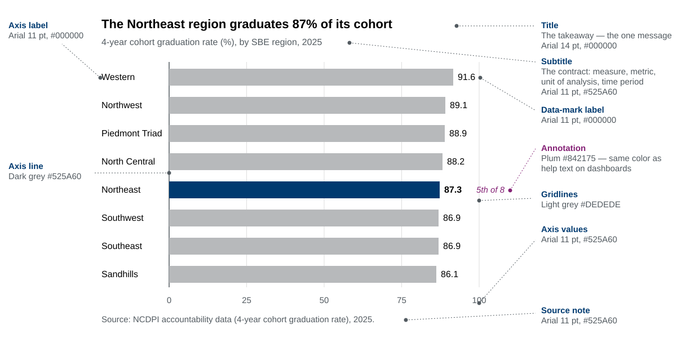

The NCDPI chart cheat sheet
Colors, type specs, and chart parts for building charts at the North Carolina Department of Public Instruction — the quick reference, all on one page. Everything’s right below.
Just deciding which chart to use? Open the Chart Chooser
Anatomy of an NCDPI chart
Every part has a job. Title carries the takeaway; the subtitle carries the contract; color does one thing at a time.

See Chart elements for the full anatomy, and Table and Dashboard elements for those.
Type at a glance
Arial throughout. Sizes and colors are the brand standard — the same values that drive every chart in this guide.
How we use color
Reach for the palette that matches the job, not your favorite color. Each panel below is the same idea: grey recedes, color carries the message.
- Highlight — one navy
#003A70bar against neutral grey. Draw the eye to one thing. → Highlights - Categorical — distinct, unordered groups (regions, subjects). → Category groups
- Sequence — an ordered low-to-high scale (counts, bands). → Sequences
- Good / Bad — a value worth celebrating (teal
#077890) or flagging (rust#B33A12). → Sequences · Diverging
Five distinct colors is the ceiling — three or four is better. Past five hues people can’t reliably tell categories apart. Don’t add colors; highlight one against grey, or use small multiples.
Category groups
Brand order — Blue → Orange → Purple → Green → Gold → Plum:
Highlight & chart elements
Sequences and diverging ramps come in 2–5 and 3–9 steps — pick a length on the Sequences and Diverging pages. Every value is in the searchable Color lookup.
Take the specs with you
The full spec sheet — every palette, hex, font, and size — as a single file you can keep, print, or feed to an AI assistant. Generated from the same source as this page, so it never drifts.